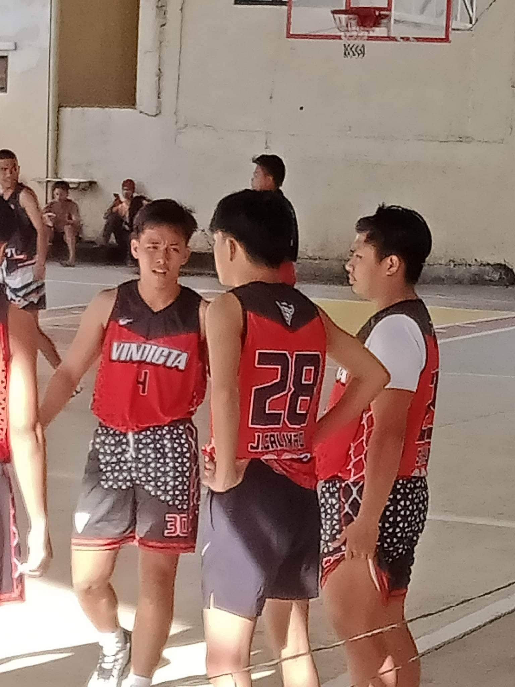
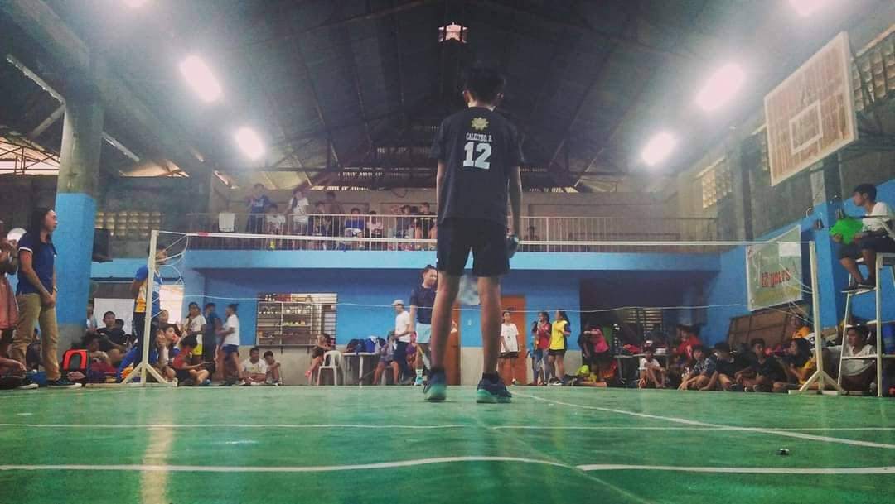
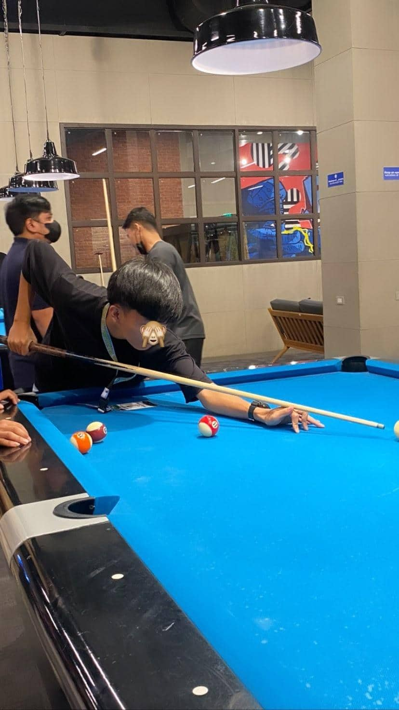

Jey Calixtro
My Hobbies



My hobby is playing badminton even though I play many sports but I like playing this game more it is a big memory in my life because I compete in competitions in our school even if I lose at least I brought the name of our school a big inspiration to my life and experience in my playing badminton I have learned a lot to play ganto so in the next game I hope many more young people will be interested in it.
One of my hobbies is to play basketball because here I meet a lot of people, Playing basketball is one of my favorite activities. It’s a great way to stay active and have fun with friends or family. Basketball has been around for many years, but it still remains an incredibly popular sport today.
My last hobby is playing billiards because Playing billiards is a great way to have fun and relax at the same time. It’s a game that requires skill, strategy, and patience to master. Billiards can be played on any type of table with two or more players competing against each other in order to pocket all of their balls first.